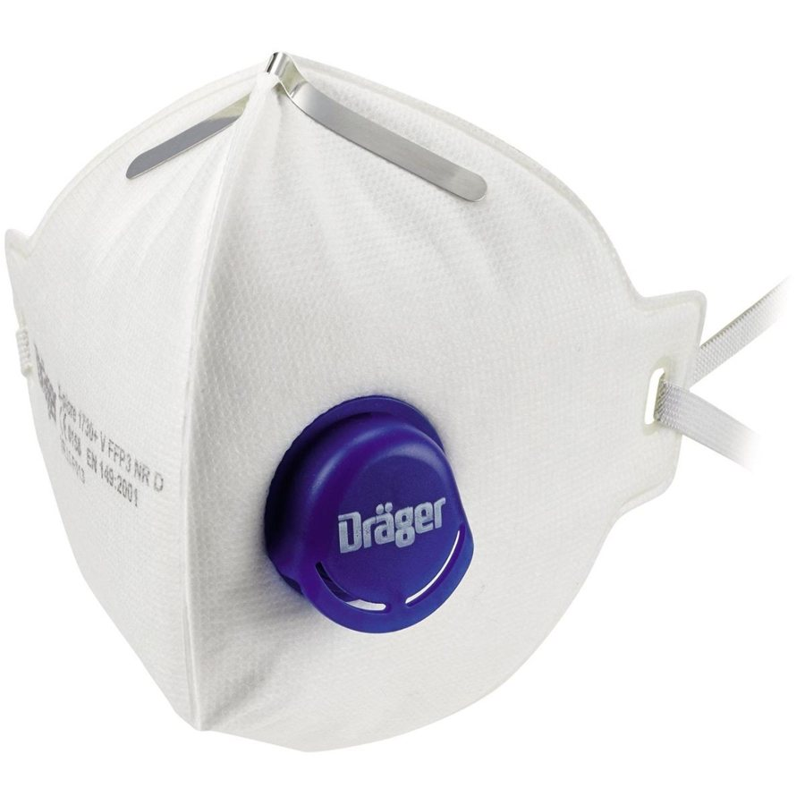
Reference image: Dräger · eBay.de. Shows the product type, not the Chinese maker's product.
FFP3 disposable respirator with valve
FFP3 NR D filtering half mask with exhalation valve for short dust and fibre tasks – high filtration, ready to use immediately.
Specifications
| Protection class | FFP3 NR D (EN 149) |
|---|---|
| Filter efficiency | ≥ 99 % |
| Total inward leakage | ≤ 2 % |
| Exhalation valve | 1× climate valve |
| Design | Cup-shaped mask |
| Nose clip | Aluminium |
| Pack unit | Individually packed, 20 pcs |
Internal
No manufacturer in the travel-route cities – ask on site (wholesale market, trade fair) or release a maker from the archive.
- Landed cost
- –
- Selling price (net)
- €4.09
- Margin
- –
- Target price China
- –
- Saving vs. buying in Germany
- –
- Minimum order
- –
- Price basis
- Listing
per unit, net. China prices are list prices (not negotiated). Freight, duty and handling are assumptions; import VAT is deductible as input tax. Assumptions: freight by product group, 3 % handling, selling 15 % below the German market price, target margin 25 %.
Description
The FFP3 mask is the quick respiratory protection for sampling, minor repairs, clean-up and short demolition or grinding tasks where a reusable device would be disproportionate.
More
Multi-layer polypropylene fleece, a tight-sealing aluminium nose clip, a climate valve against heat build-up and a continuous sealing rim ensure a secure fit and low breathing resistance. Professional users in Germany expect EN 149:2001+A1:2009 marked FFP3 NR D, CE marking with a four-digit NB number on every mask, individual packaging and an expiry date. KN95, N95 or GB standards are no substitute in the EU; for asbestos work the requirements of TRGS 519 and the wearing-time limits of DGUV Regel 112-190 apply.
Customs
| Tariff code | 90200090 |
|---|---|
| Duty rate | check in TARIC |
Standards & marks (Germany/EU)
EN 149:2001+A1:2009Filtering half masks to protect against particles – FFP3EU 2016/425PPE Regulation, category III, CE with NB numberDGUV Regel 112-190Use of respiratory protective devices (wearing-time limits)TRGS 519Asbestos: limits for filtering half masks
Internal · notes
Request from the supplier
- EU type-examination certificate to EN 149:2001+A1:2009 (FFP3) with NB number – the number must be printed on every mask and confirmed in NANDO and directly with the body (many forged FFP certificates circulate).
- Batch test report: penetration (NaCl, paraffin oil), total inward leakage ≤ 2 % and breathing resistance.
- Written clarification that only EN 149 applies – KN95, N95 and GB 2626 are not accepted.
- Individual packaging marked FFP3 NR D with expiry date, batch number and German instructions.
- Have samples tested independently before a series order (fit test); require proof of plant, ISO 9001 and production surveillance (module C2/D).
Sources
No FFP3 manufacturer price with URL found. Reference only for FFP2 with valve (not FFP3): Xiantao Zhongyi EN149:2001 CE, US$0.16–0.22 from 30,000 pieces (aggregator accio.ai: https://www.accio.ai/find-product/ffp2-mask-side-view). An FFP3 head-band model from the same company is listed without a price – clarify price and MOQ on request.
Goes well with
Accessories, consumables and products that sellers sell together with this item.

More products in this category
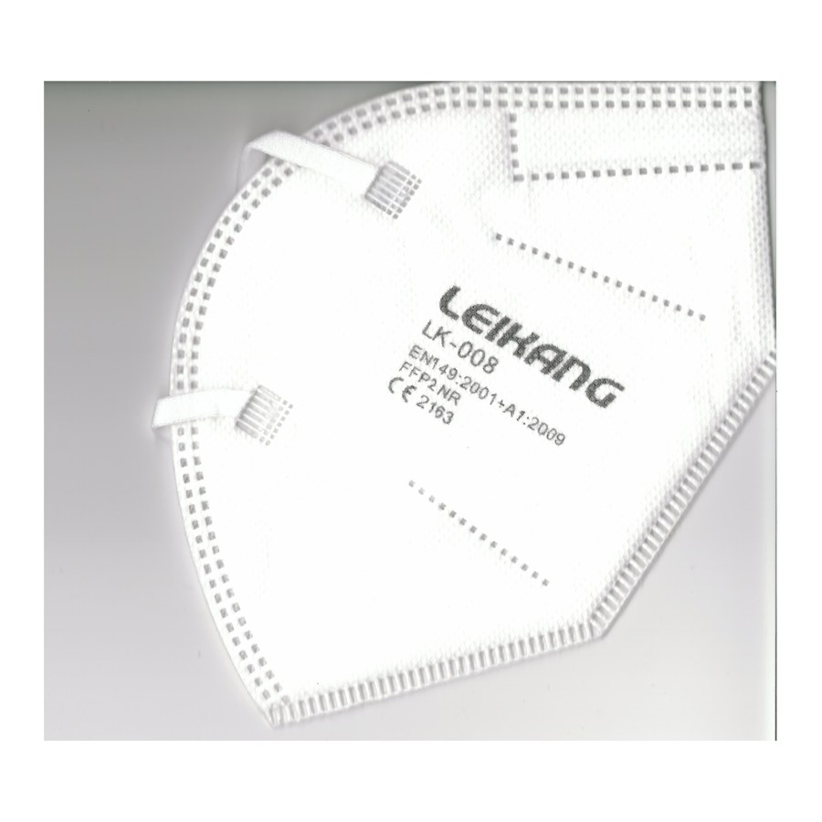
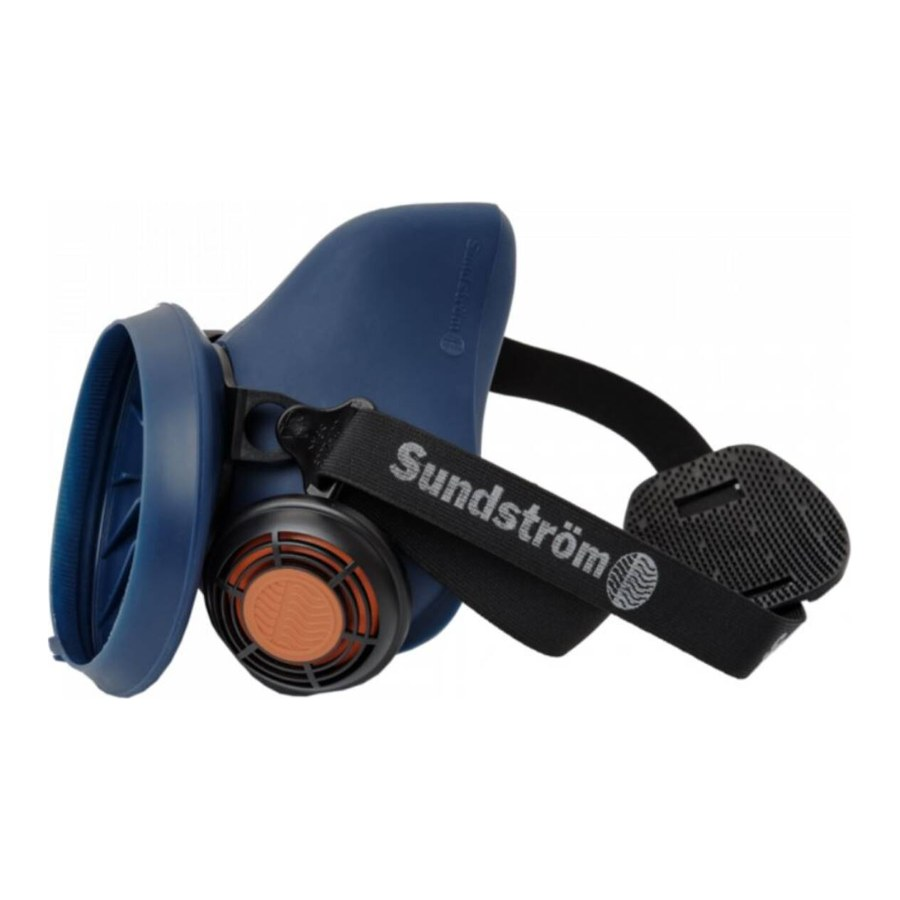
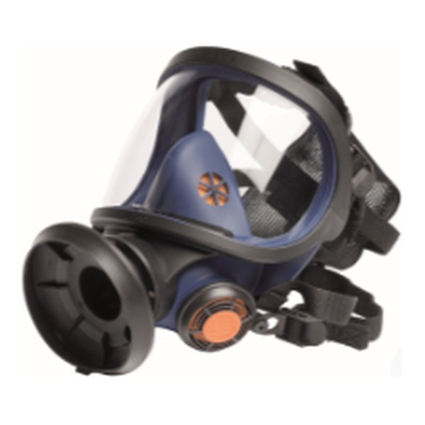
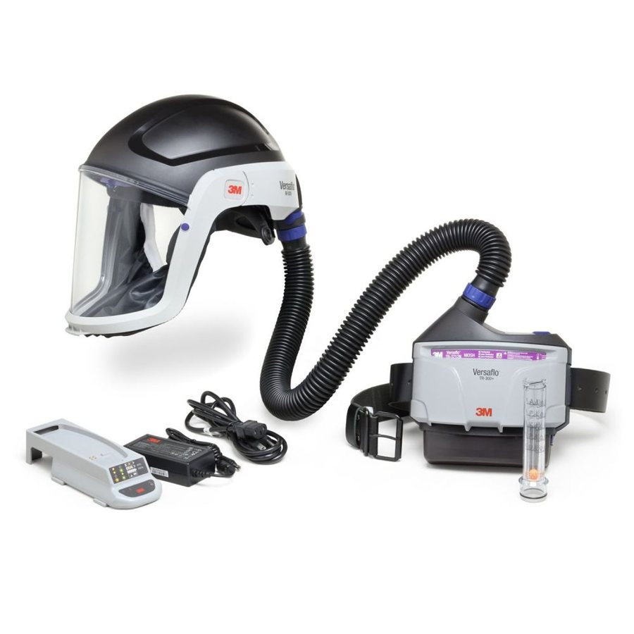
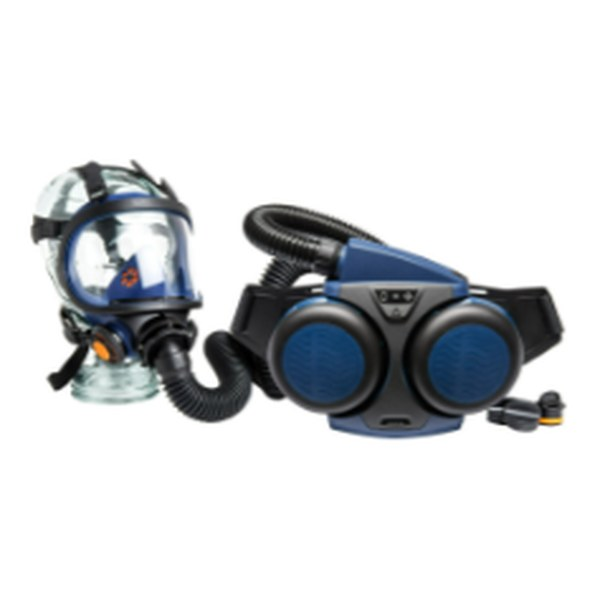
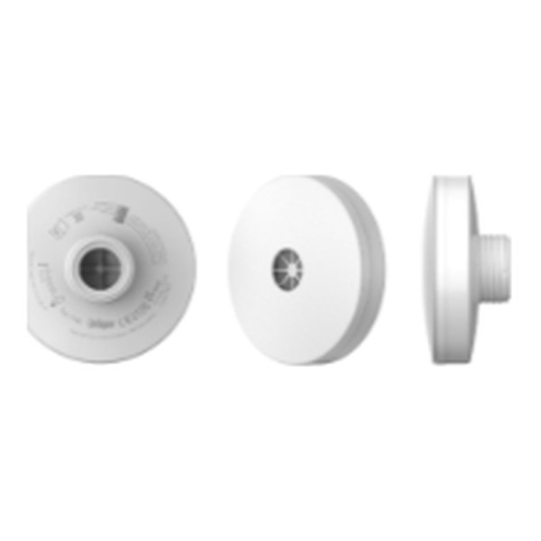
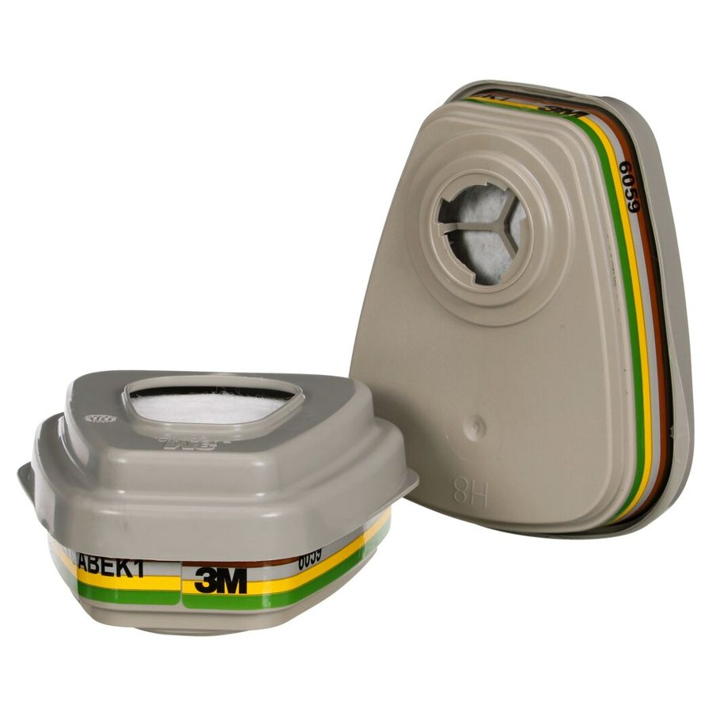
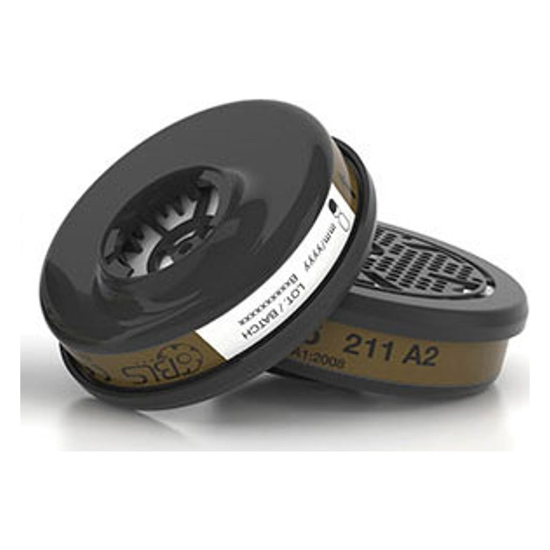
Cross-sell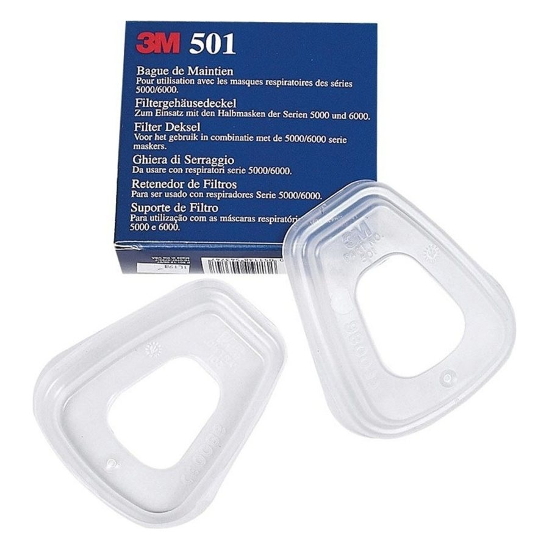
Cross-sell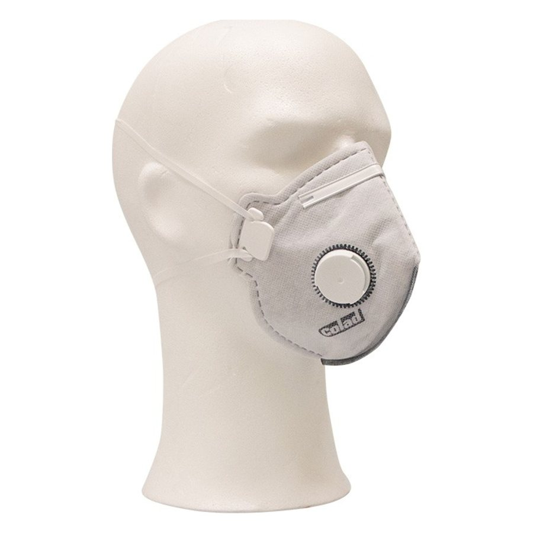
Upsell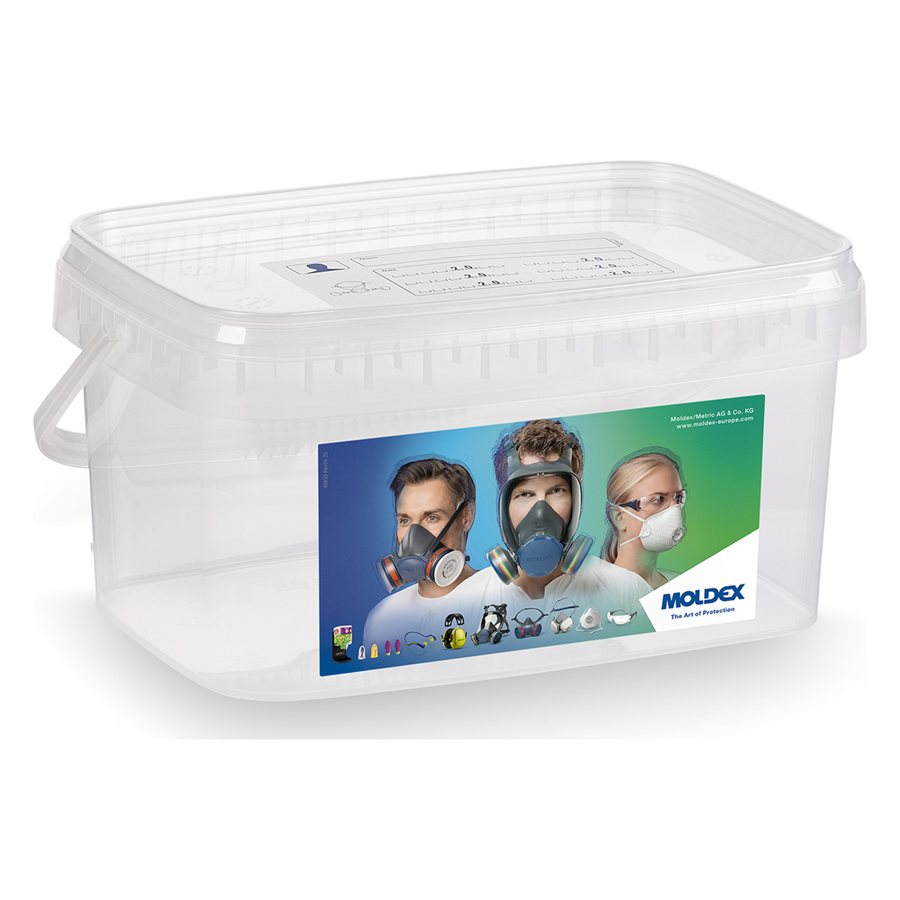
Cross-sell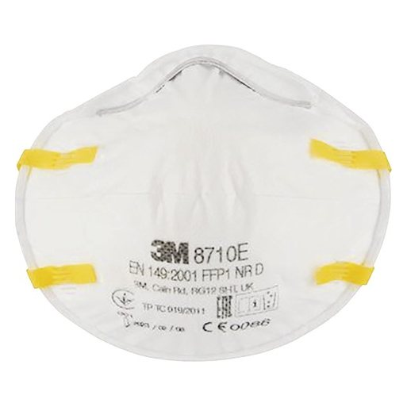
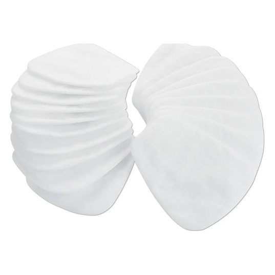
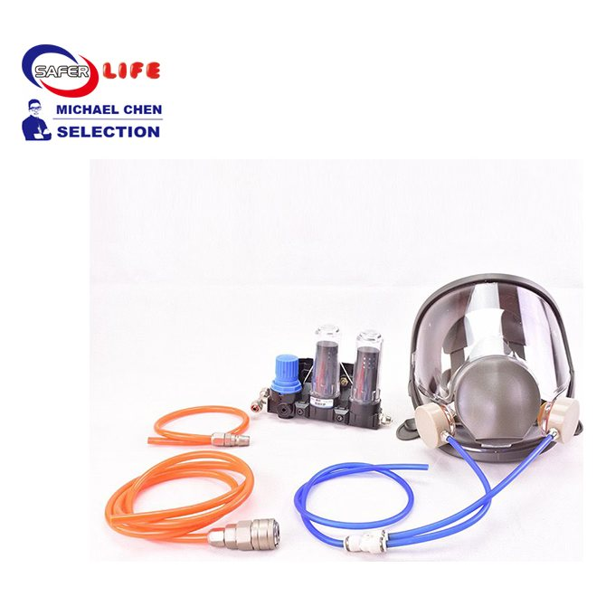
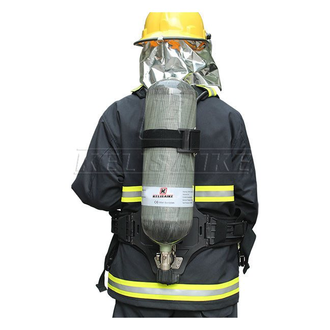
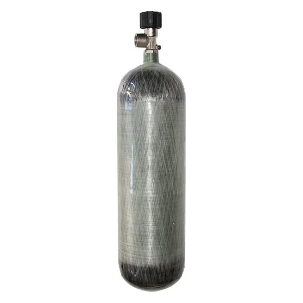